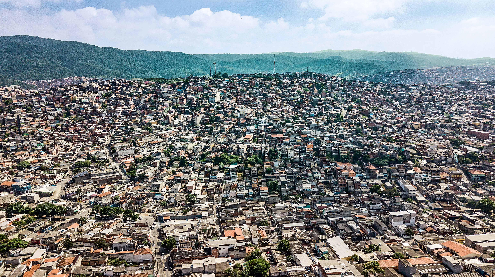

╭₊˚๖ Brasilândia ๖₊˚

❃Informações
Área: 21km²
População: 264.918 hab
Densidade: 12615 hab/ha
IDH: 0,769 - Médio
Subprefeitura: Freguesia do Ó/Brasilândia
Região Administrativa: Norte
❃História
O distrito da Brasilândia originou-se de um desmembramento de sítios e chácaras que havia no início do Século XX. Na década de 1930, sítios e chácaras de cana de açúcar foram convertidos em lotes residenciais. Brasílio Simões, um comerciante da época, liderou o distrito durante a construção da Igreja de Santo Antônio que substituiu uma antiga capela. Como homenagem, o nome do comerciante foi utilizado na denominação do distrito. O distrito abriga famílias de classe média.
Hoje em dia o distrito vem se desenvolvendo ainda mais com a construção de um Metrô. Possui várias escolas públicas e particulares, mercados e atacadistas como Roldão, além da proximidade do Cantareira Norte Shopping.
❃História da minha família
Assim que minha Mãe ( Rita de Cássia dos Reis Savian) estava em uma uma união estável com meu Pai ( Marcus Antônio Savian ), minha Mãe saiu da casa de minha Avó que era até onde então morava. Dessa forma eles começaram a procurar um local para comprar um terreno para morar.
Após muito tempo surgiu uma oportunidade de morar na Brasilândia, aonde meu Pai cresceu, era um bairro adequado, meu Avô encontrou o terreno e o comprou, dessa forma loteando o mesmo, em uma casa moraria ele e minha Vó, em outra casa minha Mãe e meu Pai, em outra meu Tio e minha Tia e na outra meu outro Tio e minha outra Tia.
Isso criou o que eu chamava de quintal, ao sair por um portão eu ia para um quintal onde tinha mais 3 casa, dessa forma eu vivi toda minha infância em um ambiente saudável em que eu pude conviver com meus primos e a família do meu Pai.